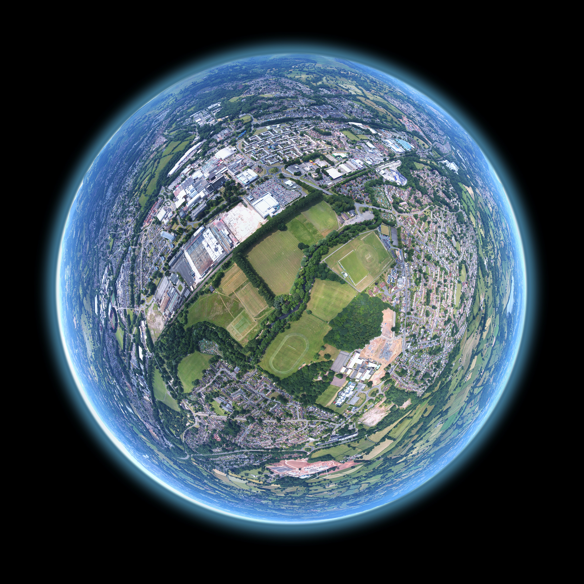

Hypertext Markup Language (HTML) is the standard markup language for creating web pages and web applications.
사람과 사람이 만나는 일은 세계와 세계가 만나는 일,
그래서 나는 사람을 만날 떄 그 사람의 세계가 넓길 바란다.
내가 들여다볼 곳이 많은 사람이었으면 좋겠다.
나눌 수 있는 것들이 많은 사람이었으면 좋겠다.
하지만
가끔은 세계가 전혀 없는 사람도 있더라.